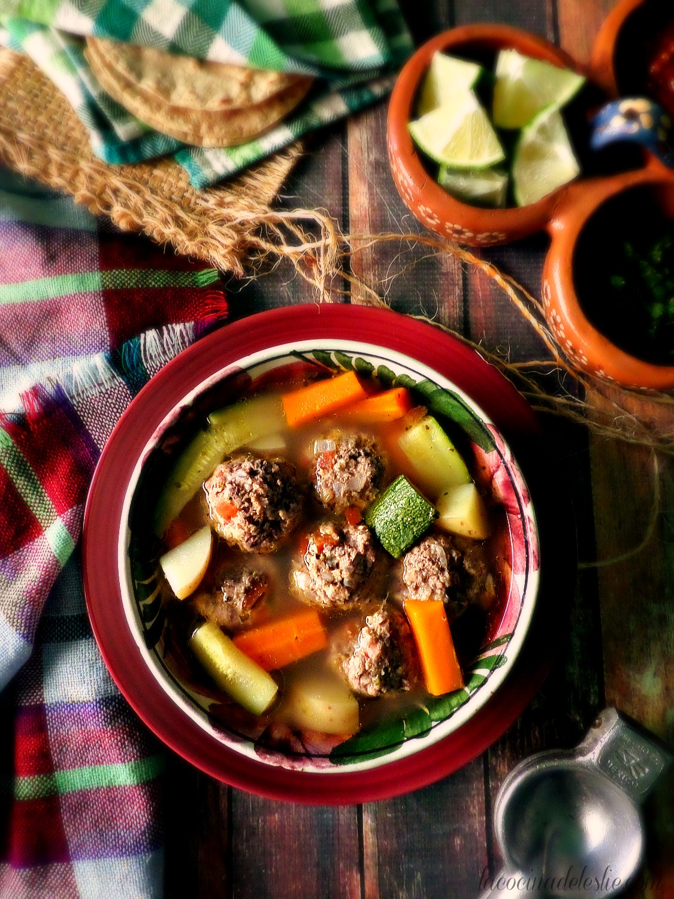

Albondigas Soup
This hearty Mexican meatball soup with veggies simmered
in a clear broth is just what you need when you're in the
mood for some good old-fashioned comfort food like
your abuelita used to make.
Ingredients
For the meatballs:
- 2 lbs lean ground beef
- 1/3 cup long grain rice uncooked
- 1/3 cup old fashioned oats
- 1/3 cup dried bread crumbs
- 1 teaspoon salt
- 1/2 teaspoon ground black pepper
- 1/2 teaspoon dried crushed Mexican oregano
- 2 large eggs
- 3 roma tomatoes, finely chopped
- 2 garlic cloves, minced
- 1/2 medium white onion, finely chopped
- 1 chile serrano,
finely chopped (optional)
For the soup:
- 16 cups of water
- 6 medium carrots, roughly chopped
- 6 medium potatoes, roughly chopped
- 1 teaspoon of coarse salt
- 1/2 teaspoon dried Mexican oregano
- 4 medium Mexican calabacitas
- Chopped cilantro for garnish
- Lime wedges for garnish
Steps
- Combine ground beef, oats, rice, dried bread crumbs in large mixing bowl;
season with salt, black pepper, oregano. Stir in eggs, tomatoes, onion,
garlic, serrano chile until compltely combined. Divide meat and shape
into 1-1/2 inch meatballs.
- Add 16 cups of water to pot. Drop meatballs gently without stirring to avoid
breakage. Add handful of cilantro and bring to a boil over high heat. Skim off
foam that rises to the top, then cover and reduce heat to low. Let simmer for
about 20 minutes.
- Add carrots and potatoes. Do not stir while seasoning with oregano and salt to
taste. Cover and let simmer over low heat for 15 minutes. Add in Mexican
calabacitas. Taste broth and adjust seasoning as necessary. Cover and let simmer
for about 15 minutes until calabacitas are cooked through.
- Enjoy with fresh cilantro garnish and fresh lime squeeze.